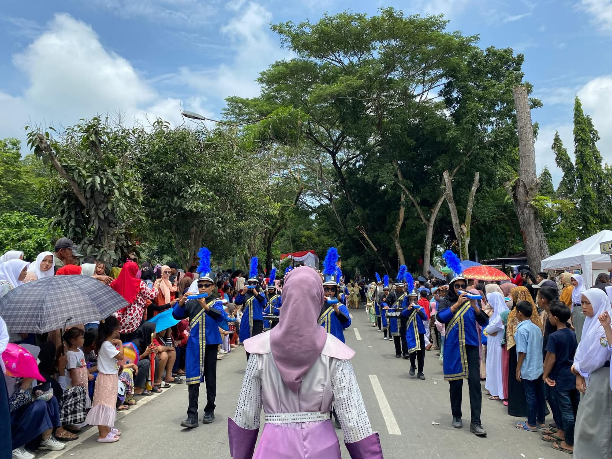
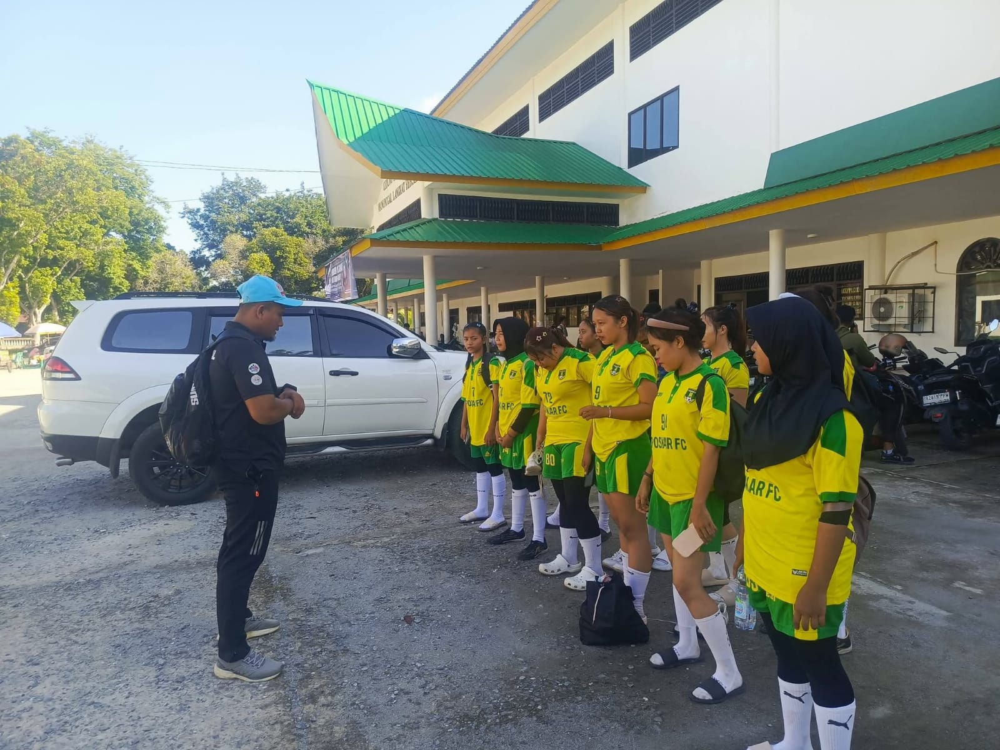
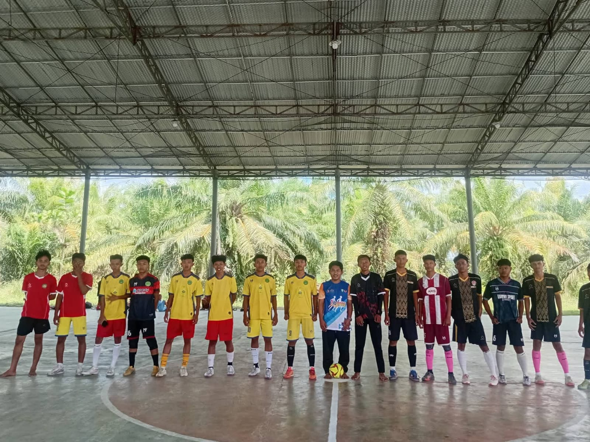
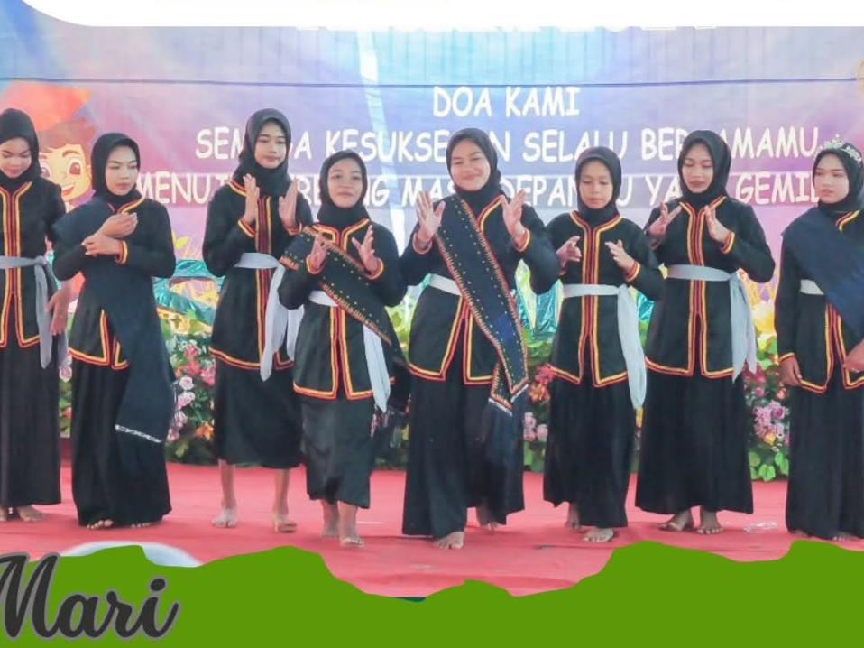

Ekstrakulikuler Smp Nusa Indah
Wadah Mengasah Bakat,Membentuk Akhlak dan Berkarakter Di Setiap Langkah
1.Drumband

Ekskul Drumband Smp Nusa Indah,menumbuhkan kedisiplinan kekompakan,dan jiwa seni melalui musik dan baris-berbaris.Kegiatan ini menjadi wadah bagi siswa/i untuk mengembangkan minat dan bakat
2.Pramuka

Gugus Depan Smp Nusa Indah Ekstrakulikuler Pramuka.Dari baris berbaris sampai ke perkemahan di alam.Pramuka Nusa Indah mendidik siswa/i bukan cuma cerdas,tapi juga tanggguh & berakhlak.
3.Handball

Ekskul Handball Smp Nusa Indah mengasah kecepatan,strategi,dan kekompakan tim.Dari latihan keras secara rutin lahir prestasi yang membanggakan.
4.Futsal

Ekskul Futsal Smp Nusa Indah,mengasah skill,membangun kekompakan,menjunjung sportivitas.1 tim,1 tujuan,1 kebanggaan.
5.Menari

Ekskul Tari Smp Nusa Indah,menjaga budaya lewat gerak,setiap tarian adalah cerita,setiap penari adalah duta bangsa.Anggun dalam gerak,kuat dalam disiplin dan melestarikan budaya mengukir prestasi.
Sosmed

Alamat
Trans Blok M Desa Telaga Jernih,Kec.Secanggang,Kab.Langkat